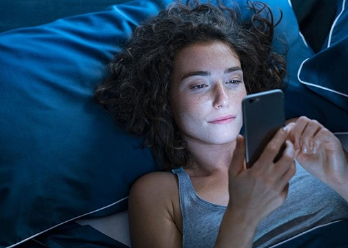
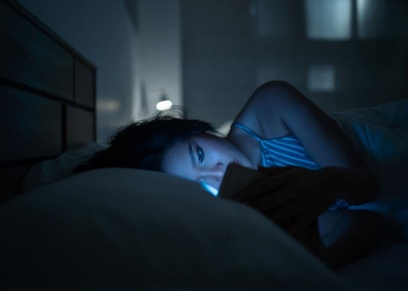
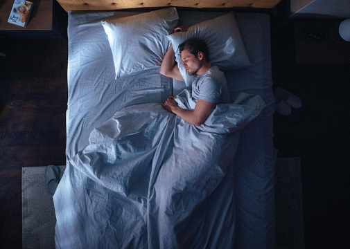
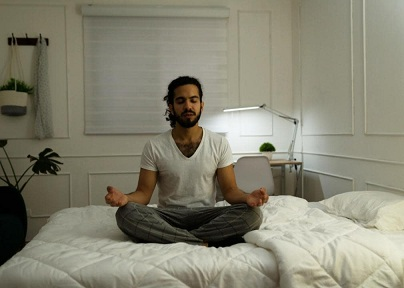
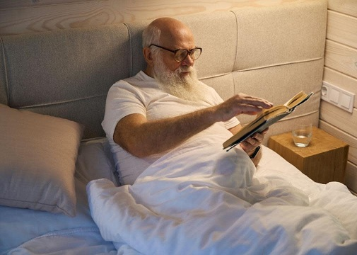
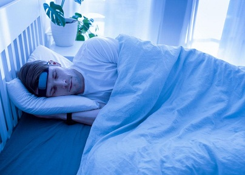

Смартфоны и очевидная зависимость общества от них считаются одной из основных причин снижения качества сна в современную технологическую эпоху.
Согласно исследованию, проведенному студенткой-медиком Королевского колледжа Лондона Сей Ён Сохн и ее соавторами, во всем мире по крайней мере 3 из 10 молодых людей слишком привязаны к своим смартфонам.
Их исследование 1043 студентов в возрасте от 18 до 30 лет выявило, что почти 4 из 10 были признаны «зависимыми» от смартфонов , что является тревожной тенденцией, учитывая важную роль сна в когнитивной функции, а также психическом и физическом здоровье.
В сегодняшнем быстро меняющемся мире, движимом технологиями, сон никогда не был более важным. Ожирение, снижение когнитивных способностей, ослабление иммунной функции и повышенный риск тревожности и депрессии — все это проблемы со здоровьем, связанные с хроническим недосыпанием. Более того, плохой сон негативно влияет на настроение и может вызывать раздражительность и эмоциональную нестабильность, поэтому адекватный отдых необходим для поддержания концентрации, производительности и общего благополучия.
Однако, несмотря на растущее понимание важности сна, наука, стоящая за факторами, которые его нарушают, в частности, ролью смартфонов, остается для многих неясной. Spokeo исследовал негативное влияние использования смартфонов на сон и то, что люди могут сделать, чтобы получить больше спокойного отдыха.
Считается, что одним из основных способов, которым смартфоны мешают сну, является синий свет, который они излучают. Было показано, что этот тип света подавляет мелатонин, гормон, отвечающий за регулирование наших циклов сна и бодрствования. По мере снижения выработки мелатонина нарушается наш циркадный ритм, из-за чего становится сложнее заснуть и проснуться отдохнувшим.
Хотя некоторые сомневаются в этой причинной связи с синим светом, умственная стимуляция от таких занятий, как игры или прокрутка социальных сетей, является еще одной причиной, по которой трудно расслабиться. Стюарт Пирсон, профессор циркадной нейронауки, рассказал Wired .
Пирсон отметил, что больше, чем синий свет, излучаемый телефонами, «Чтение рабочих писем, касающихся приближающихся сроков, явно вызывает беспокойство, а беспокойство тесно связано с бессонницей». Даже если мы не активно взаимодействуем со своими устройствами, постоянный поток уведомлений и оповещений может прерывать наш сон и не давать нам полностью отключиться.
Мы предлагаем вам несколько способов отключиться от наших смартфонов и получить несколько часов сна.

Используйте фильтры синего света
Включение фильтров синего света или настроек «ночного режима» на смартфонах и других устройствах может помочь снизить воздействие синего света вечером. Эта функция смещает цвета дисплея в сторону более теплых тонов, сводя к минимуму подавление выработки мелатонина. Большинство производителей смартфонов упростили автоматическое включение ночного режима в определенные часы дня.
Подумайте об использовании очков с фильтрацией синего света для вечернего использования экрана, особенно если вы проводите длительное время перед экранами. Однако стоит отметить, что хотя систематический обзор 29 публикаций показал, что эти очки могут помочь со сном, выводы пока не являются окончательными.

Установите ритуалы перед сном
Постоянная предсночная рутина помогает вашему телу и мозгу понять, что пора расслабиться. Расслабляющие действия — теплая ванна, чтение книги, прослушивание успокаивающей музыки — могут способствовать лучшему сну. Установление регулярного графика сна, отход ко сну и пробуждение примерно в одно и то же время каждый день — даже по выходным — может помочь регулировать ваш циркадный ритм.
Избегайте употребления кофеина или алкоголя перед сном, так как эти вещества могут мешать сну. По словам эксперта по поведенческому сну Мичиганского университета доктора Дейрдры Конрой, у людей разная переносимость этих напитков. Их воздействие, будь то небольшое или большое, отличается от человека к человеку. Как Конрой рассказала CNET , общая рекомендация для людей заключается в том, чтобы прекратить употребление кофеина за восемь часов до сна и алкоголя за три часа до сна.
Успокаивающие занятия, такие как медитация или легкая растяжка перед сном, также могут успокоить ваш разум и тело.

Создавайте зоны, свободные от технологий
Зоны без техники в спальнях могут помочь минимизировать отвлекающие факторы и способствовать созданию более благоприятной среды для сна. Запрет на смартфоны и другие электронные устройства в спальне устраняет соблазн проверять уведомления или взаимодействовать с контентом перед сном.
Держите телефон в отдельной комнате во время зарядки и включите его режим «не беспокоить». Физическое перемещение технологического соблазна подальше может облегчить отвлечение от стимулирующих сообщений в социальных сетях и действий на телефоне. Если ваш телефон также является вашим будильником, замените его аналоговой или цифровой версией.
Если вы не можете выделить отдельное пространство, попробуйте изменить элемент декора, чтобы обозначить изменение обстановки.

Ограничьте время использования интерактивных экранов перед сном
Интерактивные действия на экране, такие как видеоигры и общение в социальных сетях, могут быть более стимулирующими, чем пассивные действия, такие как просмотр видео. Исследование 475 молодых людей, опубликованное в 2023 году в Journal of Adolescent Health, показало, что сон задерживался на каждый час игр или общения с друзьями в сети.
Американская академия педиатрии рекомендует не использовать экраны за час до сна . Установка временного ограничения на использование социальных сетей или видеоигр и постепенное сокращение использования по мере приближения времени сна может быть полезной. Замените интерактивное экранное время более расслабляющими занятиями, например, чтением или прослушиванием успокаивающей музыки.

Попробуйте носимые устройства для отслеживания сна
Носимые устройства, такие как смарт-часы и фитнес-трекеры, могут помочь отслеживать режим сна и определять потенциальные области для улучшения для тех, у кого есть немного дополнительных возможностей в бюджете. Устройства могут стоить от 30 до 600 долларов и даже могут подразумевать абонентскую плату. Эти устройства могут отслеживать продолжительность сна, стадии сна и бодрствование. Они также часто предоставляют более наглядные графики и другие отчеты, в которых вы можете увидеть ценную информацию о качестве вашего сна, чтобы помочь вам внести необходимые коррективы.
Вы работаете лучше всего, когда ложитесь спать в 9 вечера накануне? Вы все еще чувствуете себя вялым, несмотря на то, что ложитесь спать в 10 вечера? Небольшие изменения в вашем режиме могут помочь вам подготовиться к предстоящему дню. Несмотря на свои технические возможности, эти устройства не заменят профессионалов, поэтому, если вы заметили нарушения сна или у вас есть опасения по поводу качества сна, проконсультируйтесь с врачом.